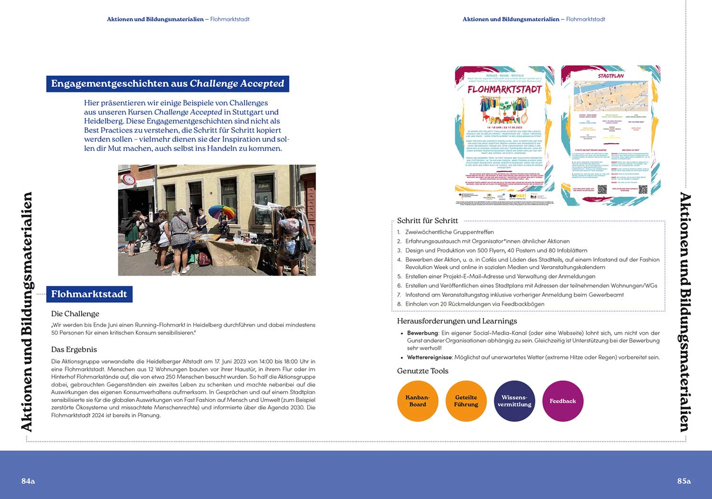

ux | ui
UX|UI Design Bootcamp project. If you would like to go straight to the final result: scroll under the slideshow and gifs. Unfortunately the prototype loads quite slowly, so if you have time, you could click to open it, and read about the process while it loads -- I would suggest only viewing the prototype on a desktop
Slideshow of the journey of the project - Remote For this project we had to find a problem, research it, ideate, create, test, implement options and designs, and try to solve the problem with a suitable digital product
